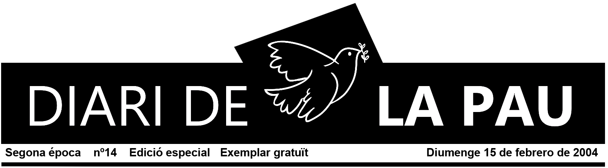
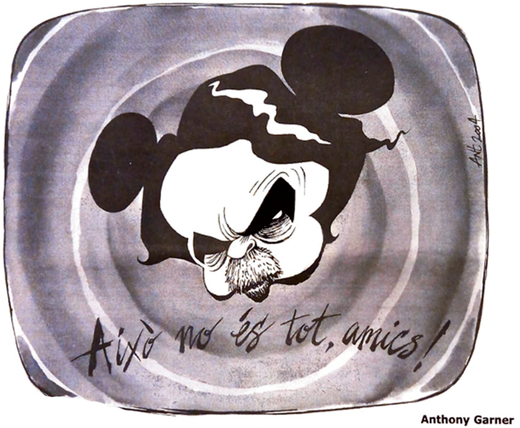

PROU DE MENTIDES
DE DESTRUCCIÓ MASIVA

Un any després, el nostres governants segueixen escopint mentides.
Menyspreen, amb el seu cinisme, tantes morts que no s'aturen. Nosaltres guardem
la memòria i acumulem més i més denúncies. Ja que no volen escoltar-les,
canalitzem-les, a les urnes.
SUMARI
L'ENTREVISTA
Alec Reid,
mediador irlandès
CULTURA DE LA PAU
Escola Cultura de la Pau
TEMA CENTRAL
Iraq, un any després
David Fernández
Maria Dolors Oller
Centro Investigació para la Paz
Jaume Botey
Acardi Oliveres
Campanya Boicot Preventiu
REVOLTA QUOTIDIANA:
8 anys tornant enrere
Redacció
Aldrim
CONFLICTES OBERTS
Geòrgia
Rebeca Pérez
Bolívia
Redacció
MITJANS
DE COMUNICACIÓ
Xavier Giró
Plataforma per l'Egunkaria
Reflexió
Montserrat Minobis
Juan José Millás
Àlex Masllorens
Jordi Alberich
Shirin Ebadi
HUMOR
Anthony Garner
Miquel Ferreres
Alfons López
Toni Batllori
Jordi Sunyer

EDITORIAL
No oblidem
Ja fa un any de l'inici de la invasió de l'Iraq. La vida quotidiana no ha millorat, el conflicte és permanent i la inseguretat molt alta. Bush, Blair i Aznar han detingut a Saddam Hussein a un preu elevadíssim, la vida de milers de persones.
Per convèncer als seus respectius pobles van assegurar que l'Iraq posseïa armes de destrucció massiva i que Saddam posava en perill la pau mundial. Aznar ho va fer al Congrés el dia 5 de febrer de 2003 i va demanar que confiessin en ell. El que queda clar és que el senyor Aznar i tots els seus diputats, sense excepció, hi estaven d'acord. Cal deixar clar que en aquell moment tothom, inclosos els polítics del PP, era plenament conscient que no hi havia cap mena de prova de l'existència de les armes de destrucció massiva. Un any després la lluita antiterrorista s'ha converit en la nova excusa.
Els polítics del PP van tractar de ximples el ciutadans, com si no tinguessin criteri. Aquest Govern té majoria absoluta perquè el ciutadans així ho van decidir, però això no els dóna el dret d'enviar cap país. L'única raó veritable d'Aznar i el seu Govern va ser la dels interessos polítics i econòmics. Van posar els seus interessos per sobre de les veus de pau d ela població.
Des del PP van voler fer com Joseph Goebbels repetir un mentida moltes vegades per convertir-la en veritat. Van repetir que seria una guerra neta, sense morts, que equival a imaginar-se un incendi forestal sense arbres cremats. Aquesta és la lògica del PP. Ara els ciutadans tenen la responsabilitat d'analitzar tot el que ha succeït i fer ús del seu dret com a electors
No oblidem. Votem amb seny a les eleccions del 14 de març.